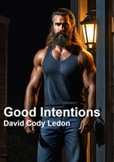
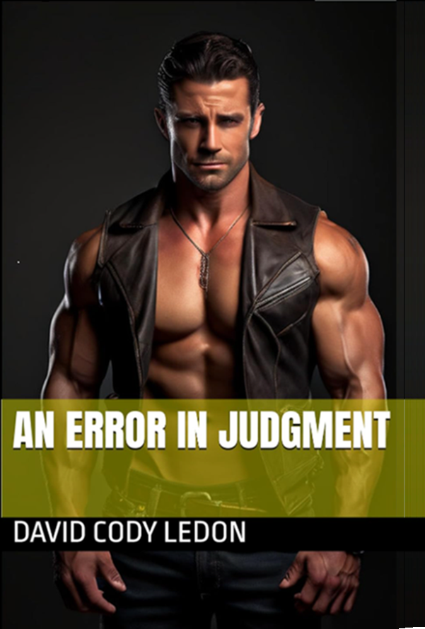

 . . |
Good IntentionsWell-meaning actions can have unexpected results. How likely is it that offering someone a job, and help getting on their feet, could land that person in a sadist’s dungeon? Or that trying to defend your friend from an unknown intruder could result in your participation in an abduction? Or that following a suggestion on how to spice up your love life could leave you under the total and inescapable control of an arrogant, dominant master? Sometimes, the road to hell is truly paved with good intentions. |
 . . |
An Error in JudgmentHow well can you read someone? Can you trust someone enough to let down your guard? Being totally controlled by a hot, dominant master, is that really a risk when you have a drink with the handsome trainer from your gym? The city and suburbs are full of people who guessed wrong. From having their every sexual move controlled, to being kidnapped and held in a dungeon. And yet, you see them every day, both the doms and the subs, at work, at the gym and in your local coffee shop. Guys who are being inescapably controlled due to an error in judgment. |
.Contact the author at davidcodyledon@gmail.com